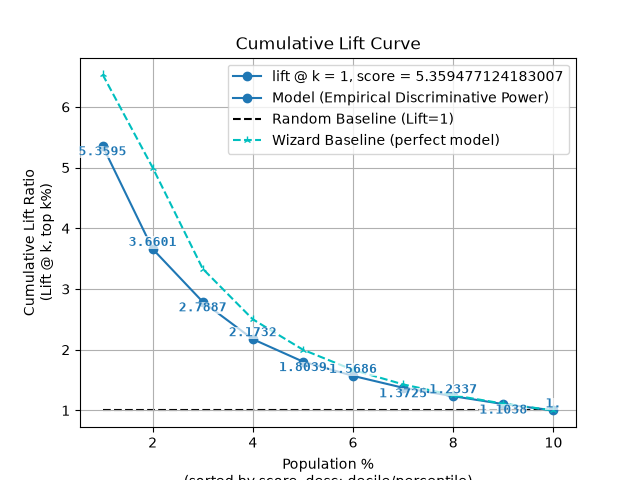
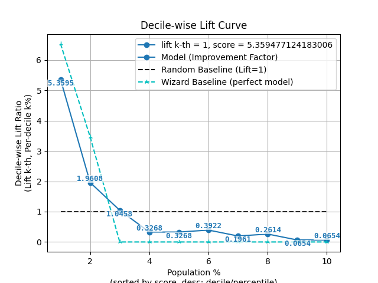
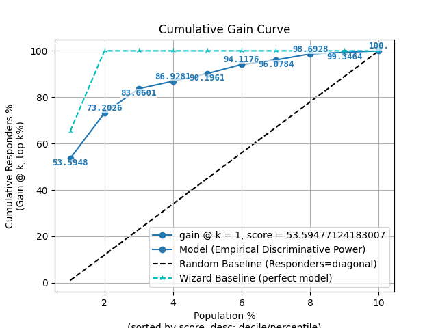
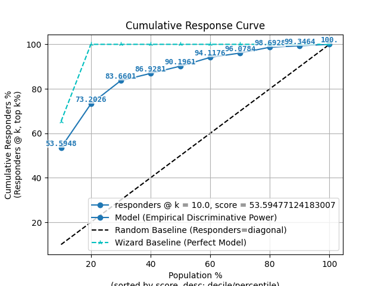
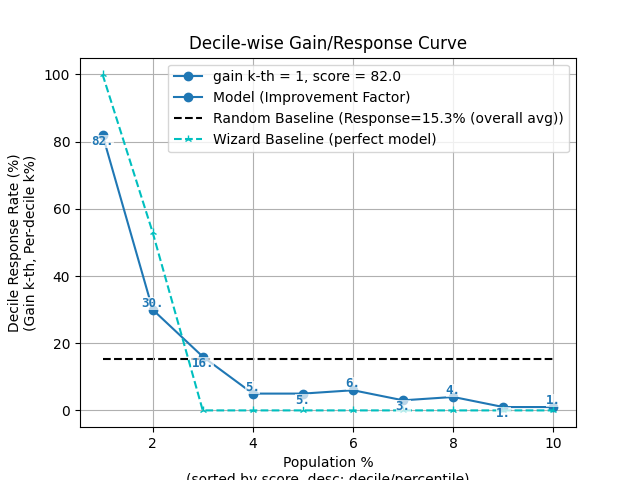
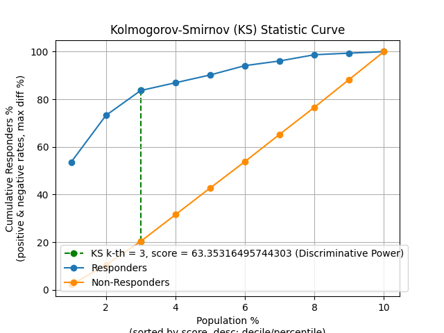
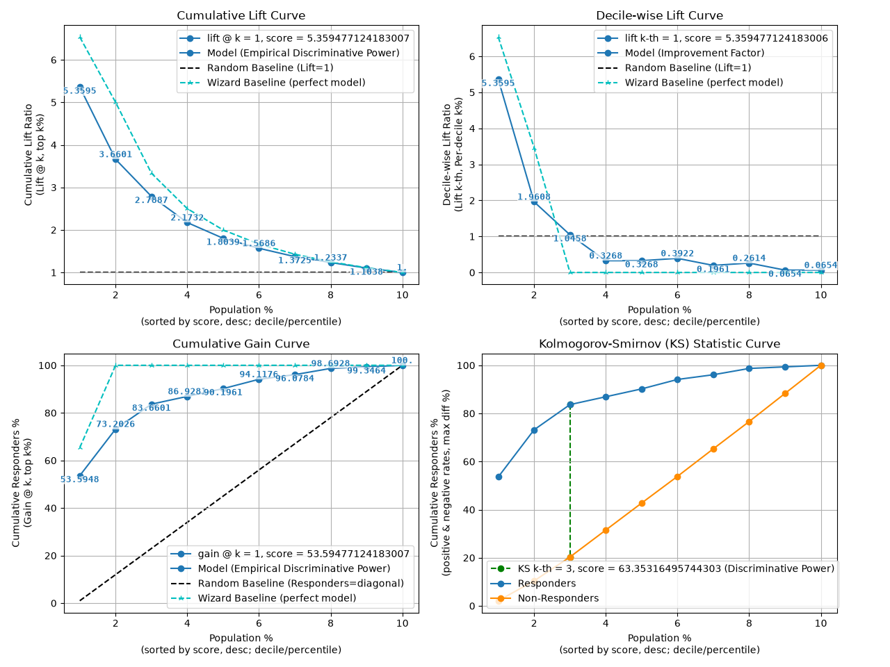
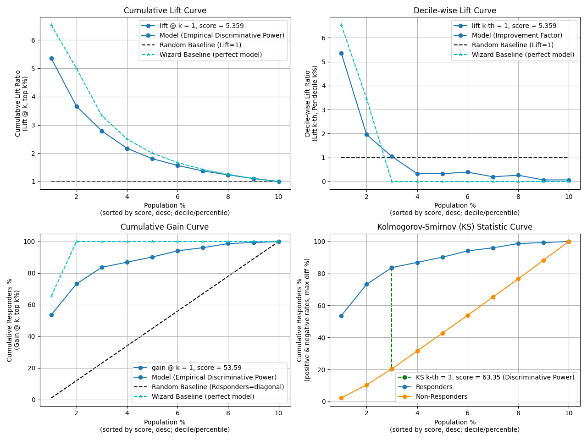

plot_decileplot_script with examples#
An example showing the decileplot function
with a scikit-learn classifier (e.g., LogisticRegression) instance.
# Authors: The scikit-plots developers
# SPDX-License-Identifier: BSD-3-Clause
Import scikit-plot
import scikitplot.snsx as sp
import matplotlib.pyplot as plt
import numpy as np; np.random.seed(0) # reproducibility
import pandas as pd
from sklearn.datasets import make_classification
from sklearn.datasets import (
load_breast_cancer as data_2_classes,
load_iris as data_3_classes,
load_digits as data_10_classes,
)
from sklearn.linear_model import LogisticRegression
from sklearn.model_selection import train_test_split
Load the data X, y = data_3_classes(return_X_y=True, as_frame=False) X, y = data_2_classes(return_X_y=True, as_frame=False)
# Generate a sample dataset
X, y = make_classification(n_samples=5000, n_features=20, n_informative=15,
n_redundant=2, n_classes=2, n_repeated=0,
class_sep=1.5, flip_y=0.01, weights=[0.85, 0.15],
random_state=0)
X_train, X_val, y_train, y_val = train_test_split(
X, y, stratify=y, test_size=0.2, random_state=0
)
np.unique(y)
array([0, 1])
Create an instance of the LogisticRegression
model = (
LogisticRegression(
# max_iter=int(1e5),
# C=10,
# penalty='l1',
# solver='liblinear',
class_weight='balanced',
random_state=0
)
.fit(X_train, y_train)
)
# Perform predictions
y_val_prob = model.predict_proba(X_val)
# Create a DataFrame with predictions
df = pd.DataFrame({
"y_true": y_val==1, # target class (0,1,2)
"y_score": y_val_prob[:, 1], # target class (0,1,2)
# np.argmax
"y_pred": y_val_prob[:, 1] > 0.5, # target class (0,1,2)
# "y_true": np.random.normal(0.5, 0.1, 100).round(),
# "y_score": np.random.normal(0.5, 0.15, 100),
# "hue": np.random.normal(0.5, 0.4, 100).round(),
})
df
p = sp.decileplot(
df,
x="y_true",
y="y_score",
kind="df",
n_deciles=10,
digits=4,
verbose=True,
)
p.T
# p.columns.tolist()
# p[["decile", "cnt_resp", "cnt_resp_wiz", "cum_resp_pct", "cum_resp_wiz_pct"]]
# p.iloc[:, range(9, 23)]
# p.iloc[:, [11, 12, 12, 14]]
{
"decile": "Meaning: Ranked group based on predicted probabilities (1 = highest probability). Critical: Ensure data is sorted descending by model score; top deciles should capture the majority of positives. Formula: Assign samples to k quantiles (e.g., 10 deciles) based on model score.",
"prob_min": "Meaning: Minimum predicted probability within the decile. Critical: Indicates model calibration; values too close to prob_max suggest poor separation. Formula: min(score in decile).",
"prob_max": "Meaning: Maximum predicted probability within the decile. Critical: Checks separation; overlap with lower deciles indicates poor discrimination. Formula: max(score in decile).",
"prob_avg": "Meaning: Average predicted probability within the decile. Critical: Useful for calibration checks; should decrease monotonically across deciles. Formula: mean(score in decile).",
"cnt_resp_true": "Meaning: Actual positives/responders in the decile. Critical: Should never exceed cnt_resp_wiz_true; flat counts across deciles indicate a weak or non-discriminative model. Formula: sum(y_true = 1 in decile).",
"cnt_resp_false": "Meaning: Actual negatives/non-responders in the decile. Critical: Used in KS/statistical calculations; too many negatives in top deciles is a warning. Formula: cnt_resp_total - cnt_resp_true.",
"cnt_resp_total": "Meaning: Total samples in the decile (positives + negatives). Critical: Denominator for rate_resp and cumulative % calculations; decile imbalance can distort lift/gain. Formula: count(samples in decile).",
"cnt_resp_rndm_true": "Meaning: Expected positives in the decile under a random model. Critical: Baseline for lift/gain comparison; fatal if model barely exceeds random. Formula: total_positives / n_deciles.",
"cnt_resp_wiz_true": "Meaning: Ideal/maximum possible positives if the model were perfect. Critical: Must always be ≥ cnt_resp_true; NaN or extremely low values indicate data issues. Formula: allocate top positives directly to highest scoring deciles.",
"rate_resp": "Meaning: Decile-level response rate (alias: decile_wise_response, decile_wise_gain). Critical: Measures decile quality; early deciles should outperform later ones. Formula: rate_resp = cnt_resp_true / cnt_resp_total.",
"overall_rate": "Meaning: Overall response rate across the dataset; serves as the baseline probability of a positive. Critical: Used as the denominator in decile-wise lift; essential to assess improvement vs random. Formula: overall_rate = sum(cnt_resp_true) / sum(cnt_resp_total) (fraction or %).",
"cum_resp_true": "Meaning: Cumulative number of positives captured up to the current decile (alias: cumulative_gain). Critical: Should increase monotonically; maximum = total responders. Flat curve indicates weak model. Formula: Σ cnt_resp_true (≤ current decile).",
"cum_resp_true_pct": "Meaning: Cumulative % of positives captured = cum_resp_true / total_responders * 100. Critical: Used for lift/gain curves; should always be ≥ model baseline. Formula: cum_resp_true / total_responders * 100.",
"cum_resp_false": "Meaning: Cumulative number of negatives captured up to the current decile. Critical: Used for KS/statistical calculations; dominance in early deciles is undesirable. Formula: Σ cnt_resp_false (≤ current decile).",
"cum_resp_false_pct": "Meaning: Cumulative % of negatives captured = cum_resp_false / total_nonresponders * 100. Critical: Should differ from cum_resp_true_pct; nearly equal curves indicate model failure. Formula: cum_resp_false / total_nonresponders * 100.",
"cum_resp_total": "Meaning: Cumulative total samples up to the current decile. Critical: Tracks population coverage for lift/gain charts. Formula: Σ cnt_resp_total (≤ current decile).",
"cum_resp_total_pct": "Meaning: Cumulative % of total population covered. Critical: X-axis for lift/gain curves; check decile balance. Formula: cum_resp_total / total_samples * 100.",
"cum_resp_rndm_true": "Meaning: Cumulative expected positives if randomly assigned. Critical: Baseline for cumulative lift; fatal if model ≈ random curve. Formula: Σ cnt_resp_rndm_true (≤ current decile).",
"cum_resp_rndm_true_pct": "Meaning: Cumulative % of expected positives under random = cum_resp_rndm_true / total_responders * 100. Critical: Baseline curve is linear from (0,0) to (100,100); model curve must exceed this. Formula: cum_resp_rndm_true / total_responders * 100.",
"cum_resp_wiz_true": "Meaning: Cumulative ideal/maximum possible positives. Critical: Must always be ≥ model values; never NaN. Formula: Σ cnt_resp_wiz_true (≤ current decile).",
"cum_resp_wiz_true_pct": "Meaning: % cumulative ideal positives = cum_resp_wiz_true / total_responders * 100. Critical: Wizard benchmark for lift/gain curves; gaps indicate model weakness. Formula: cum_resp_wiz_true / total_responders * 100.",
"cumulative_lift": "Meaning: Empirical discriminative power; shows cumulative improvement vs random. Critical: Always cumulative; should exceed 1 (or ≥2 in top decile). Formula: cumulative_lift = cum_resp_true_pct / cum_resp_total_pct.",
"decile_wise_lift": "Meaning: Improvement factor for individual deciles; shows how much better each decile performs vs random. Critical: Fatal if <1. Early deciles should show highest lift. Formula: decile_wise_lift = cnt_resp_true / cnt_resp_rndm_true.",
"KS": "Meaning: Peak discriminative power (scalar) extracted from cumulative gain curves; maximum distance between cumulative distributions of positives and negatives. Range: 0-1 (fraction) or 0-100 (percent). Interpretation: - <0.2 → Poor discrimination - 0.2-0.4 → Fair - 0.4-0.6 → Good - ≥0.6 → Excellent - ≥0.7 → Suspiciously high (possible overfitting or leakage). Critical: Report across train/validation/test; ensure top deciles dominate appropriately. Formula: KS = max(cum_resp_true_pct - cum_resp_false_pct) (sorted descending by model score)."
}
p = sp.decileplot(df, x="y_true", y="y_score", kind="cumulative_lift", n_deciles=10, annot=True)

p = sp.decileplot(df, x="y_true", y="y_score", kind="decile_wise_lift", n_deciles=10, annot=True)

p = sp.decileplot(df, x="y_true", y="y_score", kind="cumulative_gain", n_deciles=10, annot=True)

p = sp.decileplot(df, x="y_true", y="y_score", kind="cumulative_response", n_deciles=10, annot=True)

p = sp.decileplot(df, x="y_true", y="y_score", kind="decile_wise_gain", n_deciles=10, annot=True)

p = sp.decileplot(df, x="y_true", y="y_score", kind="ks_statistic", n_deciles=10, annot=True)

fig, ax = plt.subplots(figsize=(10, 10))
p = sp.decileplot(
df,
x="y_true",
y="y_score",
kind="report",
n_deciles=10,
digits=4,
annot=True,
verbose=True,
)

{
"decile": "Meaning: Ranked group based on predicted probabilities (1 = highest probability). Critical: Ensure data is sorted descending by model score; top deciles should capture the majority of positives. Formula: Assign samples to k quantiles (e.g., 10 deciles) based on model score.",
"prob_min": "Meaning: Minimum predicted probability within the decile. Critical: Indicates model calibration; values too close to prob_max suggest poor separation. Formula: min(score in decile).",
"prob_max": "Meaning: Maximum predicted probability within the decile. Critical: Checks separation; overlap with lower deciles indicates poor discrimination. Formula: max(score in decile).",
"prob_avg": "Meaning: Average predicted probability within the decile. Critical: Useful for calibration checks; should decrease monotonically across deciles. Formula: mean(score in decile).",
"cnt_resp_true": "Meaning: Actual positives/responders in the decile. Critical: Should never exceed cnt_resp_wiz_true; flat counts across deciles indicate a weak or non-discriminative model. Formula: sum(y_true = 1 in decile).",
"cnt_resp_false": "Meaning: Actual negatives/non-responders in the decile. Critical: Used in KS/statistical calculations; too many negatives in top deciles is a warning. Formula: cnt_resp_total - cnt_resp_true.",
"cnt_resp_total": "Meaning: Total samples in the decile (positives + negatives). Critical: Denominator for rate_resp and cumulative % calculations; decile imbalance can distort lift/gain. Formula: count(samples in decile).",
"cnt_resp_rndm_true": "Meaning: Expected positives in the decile under a random model. Critical: Baseline for lift/gain comparison; fatal if model barely exceeds random. Formula: total_positives / n_deciles.",
"cnt_resp_wiz_true": "Meaning: Ideal/maximum possible positives if the model were perfect. Critical: Must always be ≥ cnt_resp_true; NaN or extremely low values indicate data issues. Formula: allocate top positives directly to highest scoring deciles.",
"rate_resp": "Meaning: Decile-level response rate (alias: decile_wise_response, decile_wise_gain). Critical: Measures decile quality; early deciles should outperform later ones. Formula: rate_resp = cnt_resp_true / cnt_resp_total.",
"overall_rate": "Meaning: Overall response rate across the dataset; serves as the baseline probability of a positive. Critical: Used as the denominator in decile-wise lift; essential to assess improvement vs random. Formula: overall_rate = sum(cnt_resp_true) / sum(cnt_resp_total) (fraction or %).",
"cum_resp_true": "Meaning: Cumulative number of positives captured up to the current decile (alias: cumulative_gain). Critical: Should increase monotonically; maximum = total responders. Flat curve indicates weak model. Formula: Σ cnt_resp_true (≤ current decile).",
"cum_resp_true_pct": "Meaning: Cumulative % of positives captured = cum_resp_true / total_responders * 100. Critical: Used for lift/gain curves; should always be ≥ model baseline. Formula: cum_resp_true / total_responders * 100.",
"cum_resp_false": "Meaning: Cumulative number of negatives captured up to the current decile. Critical: Used for KS/statistical calculations; dominance in early deciles is undesirable. Formula: Σ cnt_resp_false (≤ current decile).",
"cum_resp_false_pct": "Meaning: Cumulative % of negatives captured = cum_resp_false / total_nonresponders * 100. Critical: Should differ from cum_resp_true_pct; nearly equal curves indicate model failure. Formula: cum_resp_false / total_nonresponders * 100.",
"cum_resp_total": "Meaning: Cumulative total samples up to the current decile. Critical: Tracks population coverage for lift/gain charts. Formula: Σ cnt_resp_total (≤ current decile).",
"cum_resp_total_pct": "Meaning: Cumulative % of total population covered. Critical: X-axis for lift/gain curves; check decile balance. Formula: cum_resp_total / total_samples * 100.",
"cum_resp_rndm_true": "Meaning: Cumulative expected positives if randomly assigned. Critical: Baseline for cumulative lift; fatal if model ≈ random curve. Formula: Σ cnt_resp_rndm_true (≤ current decile).",
"cum_resp_rndm_true_pct": "Meaning: Cumulative % of expected positives under random = cum_resp_rndm_true / total_responders * 100. Critical: Baseline curve is linear from (0,0) to (100,100); model curve must exceed this. Formula: cum_resp_rndm_true / total_responders * 100.",
"cum_resp_wiz_true": "Meaning: Cumulative ideal/maximum possible positives. Critical: Must always be ≥ model values; never NaN. Formula: Σ cnt_resp_wiz_true (≤ current decile).",
"cum_resp_wiz_true_pct": "Meaning: % cumulative ideal positives = cum_resp_wiz_true / total_responders * 100. Critical: Wizard benchmark for lift/gain curves; gaps indicate model weakness. Formula: cum_resp_wiz_true / total_responders * 100.",
"cumulative_lift": "Meaning: Empirical discriminative power; shows cumulative improvement vs random. Critical: Always cumulative; should exceed 1 (or ≥2 in top decile). Formula: cumulative_lift = cum_resp_true_pct / cum_resp_total_pct.",
"decile_wise_lift": "Meaning: Improvement factor for individual deciles; shows how much better each decile performs vs random. Critical: Fatal if <1. Early deciles should show highest lift. Formula: decile_wise_lift = cnt_resp_true / cnt_resp_rndm_true.",
"KS": "Meaning: Peak discriminative power (scalar) extracted from cumulative gain curves; maximum distance between cumulative distributions of positives and negatives. Range: 0-1 (fraction) or 0-100 (percent). Interpretation: - <0.2 → Poor discrimination - 0.2-0.4 → Fair - 0.4-0.6 → Good - ≥0.6 → Excellent - ≥0.7 → Suspiciously high (possible overfitting or leakage). Critical: Report across train/validation/test; ensure top deciles dominate appropriately. Formula: KS = max(cum_resp_true_pct - cum_resp_false_pct) (sorted descending by model score)."
}
decile prob_min prob_max ... decile_wise_lift decile_wise_lift_wiz KS
0 1 0.8478 0.9998 ... 5.3595 6.5359 51.4696
1 2 0.5792 0.8416 ... 1.9608 3.4641 62.8130
2 3 0.3837 0.5774 ... 1.0458 0.0000 63.3532
3 4 0.2739 0.3827 ... 0.3268 0.0000 55.4051
4 5 0.2044 0.2728 ... 0.3268 0.0000 47.4570
5 6 0.1410 0.2040 ... 0.3922 0.0000 40.2806
6 7 0.0984 0.1409 ... 0.1961 0.0000 30.7892
7 8 0.0605 0.0978 ... 0.2614 0.0000 22.0694
8 9 0.0344 0.0605 ... 0.0654 0.0000 11.0347
9 10 0.0014 0.0343 ... 0.0654 0.0000 0.0000
[10 rows x 27 columns]
fig, ax = plt.subplots(figsize=(10, 10))
p = sp.decileplot(
df,
x="y_true",
y="y_score",
kind="report",
n_deciles=10,
digits=6,
fmt='.4g'
)

decile prob_min ... decile_wise_lift_wiz KS
0 1 0.847810 ... 6.535948 51.469624
1 2 0.579150 ... 3.464052 62.813004
2 3 0.383729 ... 0.000000 63.353165
3 4 0.273915 ... 0.000000 55.405082
4 5 0.204425 ... 0.000000 47.456999
5 6 0.141044 ... 0.000000 40.280575
6 7 0.098419 ... 0.000000 30.789175
7 8 0.060545 ... 0.000000 22.069434
8 9 0.034429 ... 0.000000 11.034717
9 10 0.001371 ... 0.000000 0.000000
[10 rows x 27 columns]
Total running time of the script: (0 minutes 2.126 seconds)
Related examples